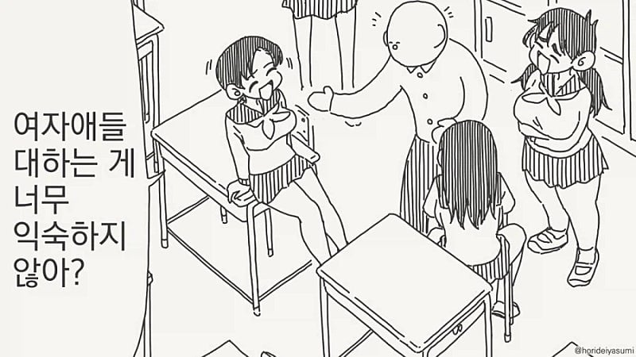
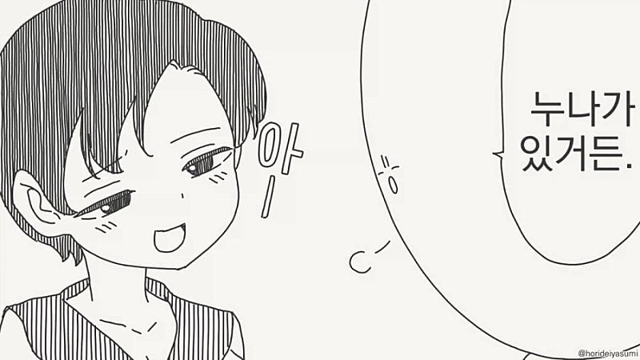
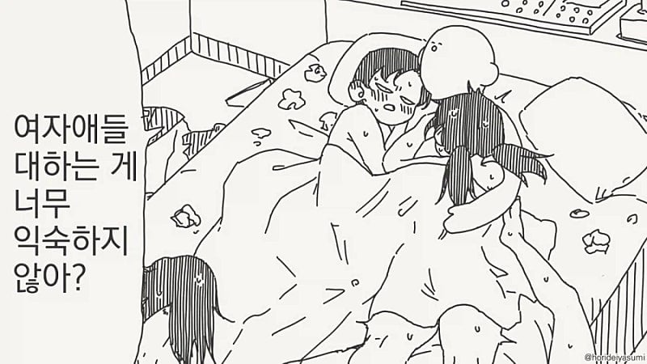

48 · 12 · 7 시간 전 · 원문



뭣
수집 당시 댓글 12개
세키로 · 11 시간 전
이런 미친 누선족 새끼...!잠시... 누나가 있는데 왜...?
↳ 답글 · 메카다나카 · 11 시간 전
집밥만 하겠어요?
↳ 답글 · 광어튀김 · 7 시간 전
골고루 먹어야지
↳ 답글 · 네크론워리어 · 7 시간 전
어허 소고기도 먹고 돼지고기도 먹고 피자도 먹고 다 하는거지 어케 맨날 하나만 먹고 사나
데빠 · 8 시간 전
ㅇㅆㅇㅆ
핑크타릭 · 8 시간 전
잠깐 첫번째컷 3명을 한번에????
↳ 답글 · Wiilll · 8 시간 전
4명임
↳ 답글 · 핑크타릭 · 7 시간 전
엇?!
↳ 답글 · 황두남 · 9 분 전
침대에 다리 하나 올라옴
버텨링 · 7 시간 전
정력 ㅈ대네
pacificWD · 7 시간 전
트윈테일 다리 굵게 디테일 살린거 봐라. 대단하네
Illumina · 6 시간 전
절륜하네
이런 미친 누선족 새끼...!
잠시... 누나가 있는데 왜...?